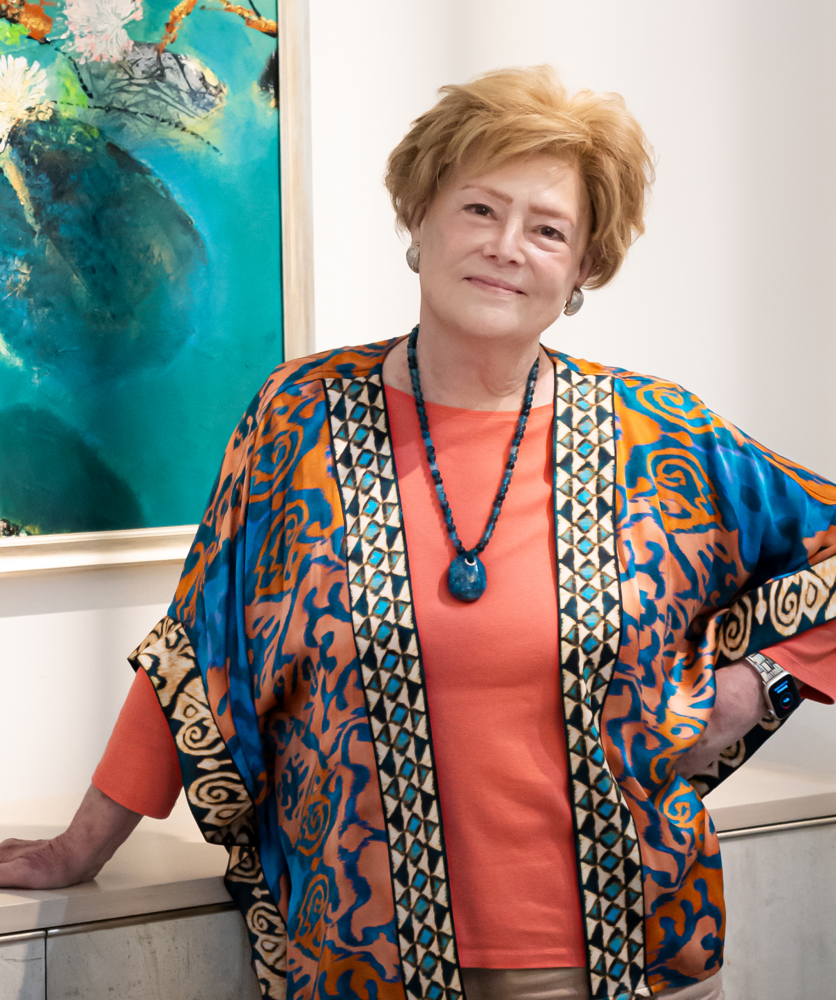
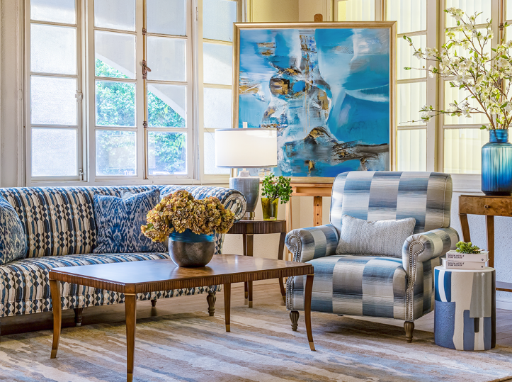
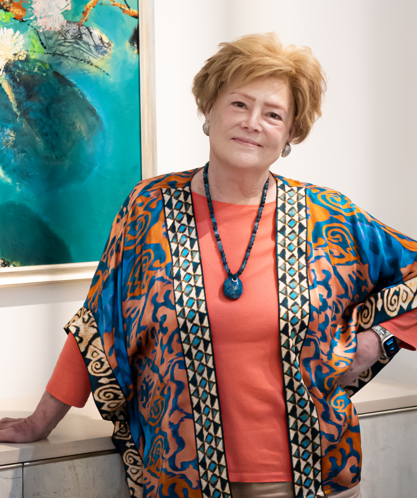
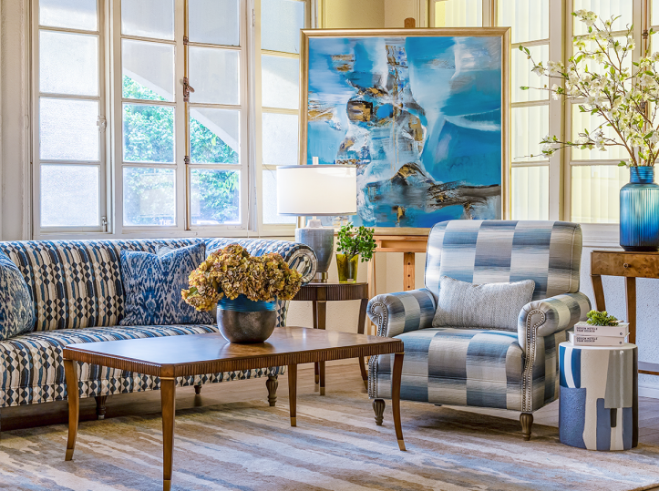

Austin Home Interiors là cái tên quen thuộc trong giới nội thất cao cấp tại Việt Nam, được biết đến với những thiết kế sống động, đầy cảm xúc và đậm dấu ấn cá nhân. Đứng sau thương hiệu này là ông Randolph L. Austin và bà Robin King Austin – những người đã gắn bó với Việt Nam từ những năm 2000, và mang theo một góc nhìn nghệ thuật khác biệt về không gian sống.
Trong tập thứ 2 của podcast series Grand Hour mùa thứ 5, bà Robin Austin chia sẻ về tình yêu với màu sắc, triết lý thiết kế tập trung vào sự hài hòa của nhiều yếu tố, và đồng thời là sự ngưỡng mộ to lớn của mình dành cho tay nghề thủ công Việt Nam – một trong những yếu tố quan trọng góp phần tạo nên linh hồn cho các sản phẩm của Austin Home Interiors.
Xin chào bà Robin Austin. Trước tiên, xin bà chia sẻ về hành trình thành lập Austin Home Interiors. Điều gì đã truyền cảm hứng cho bà và ông Randolph L. Austin khởi đầu thương hiệu này tại Việt Nam?
Khi lần đầu chuyển đến Việt Nam vào năm 2004, chúng tôi nhận thấy một điều khá đặc biệt là mặc dù có nhiều người, bao gồm cả chồng tôi Randolph, đang sản xuất đồ nội thất cao cấp tại đây, nhưng lại không có cửa hàng nào chuyên bán những sản phẩm đó. Hầu hết các showroom lúc đó đều chỉ trưng bày những món đồ nội thất truyền thống với tông màu nâu sẫm.
Chúng tôi bắt đầu tìm hiểu và nhận ra rằng rất nhiều người bạn trong ngành có hàng mẫu và sản phẩm dư thừa mà chúng tôi có thể tận dụng. Cùng lúc, chúng tôi tìm được các xưởng sẵn sàng sản xuất đồ nội thất bọc theo yêu cầu. Ý tưởng mở showroom tại Thảo Điền dần thành hình, và thật tình cờ là một công ty dịch vụ tái định cư đã tìm đến chúng tôi và nói: “Chúng tôi cần nội thất, tại sao các bạn không mở cửa hàng?”. Từ đó, Austin Home Interiors ra đời, kết hợp cả bán lẻ và cho thuê đồ nội thất để phục vụ những khách hàng nước ngoài vừa chuyển đến Việt Nam.
Vậy đâu là triết lý thiết kế cốt lõi tạo nên dấu ấn riêng cho Austin Home Interiors ngay từ ban đầu?
Sự phá cách trong màu sắc, đó chính là yếu tố khác biệt lớn nhất của chúng tôi khi vừa bắt đầu. Khi ấy, phần lớn thị trường nội thất tại Việt Nam vẫn chuộng những gam màu nâu và màu kem, dù ai cũng biết là màu sắc này rất dễ bẩn và khá đơn điệu, chúng tôi lại mang đến một không gian tràn ngập màu sắc. Cá nhân tôi luôn say mê màu sắc, chất liệu và sự pha trộn giữa các phong cách khác nhau. Điều đó thể hiện không chỉ trong thiết kế mà cả trong trang phục tôi mặc mỗi ngày. Tôi hiếm khi mặc đồ đen!
Ngoài ra, ngay từ những ngày đầu, chúng tôi đã cung cấp dịch vụ thiết kế nội thất hoàn toàn miễn phí. Các nhà thiết kế của chúng tôi sẵn sàng tư vấn để khách hàng có thể tạo ra không gian sống ưng ý nhất mà không tốn thêm chi phí, điều này tạo nên lợi thế lớn so với những nhà cung cấp khác do họ thường tính chi phí dịch vụ rất cao. Chính sự khác biệt này đã giúp chúng tôi được yêu thích và đón nhận.
Trong hành trình phát triển thương hiệu, đâu là cột mốc đáng nhớ nhất với Austin Home Interiors?
Ngay sau khi khai trương, chúng tôi đã tạo được sự khác biệt lớn trong thị trường khi ấy, đó là mang đến dịch vụ và khả năng tùy chỉnh sản phẩm. Khi phần lớn cửa hàng buộc khách hàng phải đặt hàng từ châu Âu và chờ đợi 5–6 tháng, chúng tôi lại có thể sản xuất tại Việt Nam nhờ mạng lưới đối tác rộng khắp, đặc biệt là những người thợ Việt Nam có đầy đủ khả năng và tay nghề để chế tác nên những món đồ nội thất cao cấp.
Không những vậy, sản phẩm còn có thể được cá nhân hóa, từ chất liệu vải, màu sắc, kiểu dáng đến độ êm của đệm. Đây là điều hoàn toàn mới mẻ vào thời điểm đó, và từ đó đến nay, dịch vụ tùy chỉnh này luôn chiếm khoảng 40% doanh thu của chúng tôi.
Bà có thể chia sẻ thêm về định vị thương hiệu và lợi thế cạnh tranh cốt lõi của Austin Home Interiors?
Chúng tôi định vị mình là thương hiệu nội thất cao cấp với dịch vụ tùy chỉnh chuyên sâu và chất lượng sản phẩm vượt trội. Khách hàng đến đây biết rằng họ có thể chọn từ hàng ngàn mẫu vải, thiết kế độ êm của đệm theo ý thích, chọn từng chi tiết nhỏ phù hợp gu thẩm mỹ của họ. Không chỉ đơn thuần cung cấp đồ nội thất, chúng tôi là người tạo ra trải nghiệm cho không gian sống.
Làm thế nào để Austin Home Interiors thuyết phục người tiêu dùng Việt đầu tư vào không gian sống cao cấp khi số đông vẫn còn nhạy cảm với giá cả?
Chúng tôi luôn nhấn mạnh vào chất lượng. Mỗi sản phẩm của Austin Home đều được sản xuất với tiêu chuẩn cao nhất. Chồng tôi, Randolph, từng là Chủ tịch của Theodore Alexander – thương hiệu nội thất nổi tiếng toàn cầu, và ông ấy đã đóng góp rất nhiều vào việc nâng cao tay nghề cho các nhà máy tại Việt Nam.
Ngày nay, hầu hết các thương hiệu nội thất danh tiếng đều sản xuất tại Việt Nam bởi tay nghề tinh xảo và sự tỉ mỉ trong từng chi tiết của người Việt. Đặc biệt, người Việt không chỉ yêu thích việc tạo ra những sản phẩm đẹp mà còn luôn cố gắng làm thật hoàn hảo.
Bà định nghĩa thế nào là một House of Luxe – một không gian sống đầy bản sắc thực thụ?
Một “House of Luxe” phải là nơi mọi yếu tố, từ màu sắc, kết cấu, ánh sáng, rèm cửa đến thảm sàn… kết hợp hài hòa với nhau để tạo nên một tổng thể hoàn mỹ. Mỗi ngôi nhà là một bức tranh ghép, và công việc của chúng tôi là cùng khách hàng tạo nên một bức tranh phù hợp với phong cách, cảm xúc và cá tính của họ. Khi mọi chi tiết được phối hợp nhuần nhuyễn, ngôi nhà trở thành không gian sống giàu cảm xúc và thực sự đầy bản sắc.
Vậy thì theo bà, tính bền vững và sự xa xỉ có thể thực sự song hành với nhau? Làm thế nào các vật liệu thân thiện với môi trường có thể nâng tầm sự sang trọng mà không làm mất đi giá trị vốn có?
Ý thức về môi trường là điều rất quan trọng đối với chúng tôi. Gần như tất cả sản phẩm nội thất mà chúng tôi tạo ra đều được làm từ gỗ cây keo trồng trên các trang trại, thay vì khai thác từ rừng tự nhiên, điều này giúp chúng tôi đảm bảo tính bền vững trong sản xuất. Ngoài ra, chúng tôi cũng chú trọng lựa chọn những vật liệu như vải bọc có công nghệ chống bám bẩn hoặc các loại vải có độ bền cao. Đây là những giải pháp thiết thực mà chúng tôi luôn khuyến nghị cho khách hàng để đảm bảo sản phẩm có tuổi thọ lâu dài. Tôi tin rằng đó là sự kết hợp cân bằng giữa tính sang trọng và yếu tố bền vững. Ngành công nghiệp nội thất ngày nay cũng đã quan tâm đến yếu tố thân thiện với môi trường nhiều hơn rất nhiều so với 20 năm trước. Bây giờ, bền vững đã trở thành một yếu tố không thể thiếu.
Nhìn lại hành trình hơn 20 năm của Austin Home Interiors tại Việt Nam, bà có nhận định hay chia sẻ nào dành cho các thương hiệu muốn thành công tại đây?
Một trong những lợi thế lớn nhất của chúng tôi chính là việc hầu hết sản phẩm nội thất cao cấp trên thế giới hiện nay đều được sản xuất tại các nhà máy ở Việt Nam. Chúng tôi có thể làm được rất nhiều điều ngay tại chỗ, từ chế tác đến hoàn thiện. Những thương hiệu muốn bước vào thị trường này sẽ có lợi nếu họ chọn sản xuất tại Việt Nam, tận dụng tay nghề tuyệt vời của người Việt cùng với vẻ đẹp của các vật liệu sẵn có, để tạo ra những sản phẩm chất lượng ngay trong nước. Điều đó không chỉ giúp tiết kiệm chi phí vận chuyển, tránh phải chờ đợi sáu tháng như khi nhập khẩu, mà còn mang lại một lợi thế cạnh tranh thực sự mạnh mẽ.
Xin cảm ơn những chia sẻ quý giá của bà!